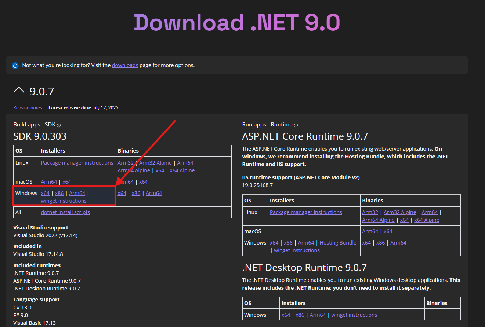
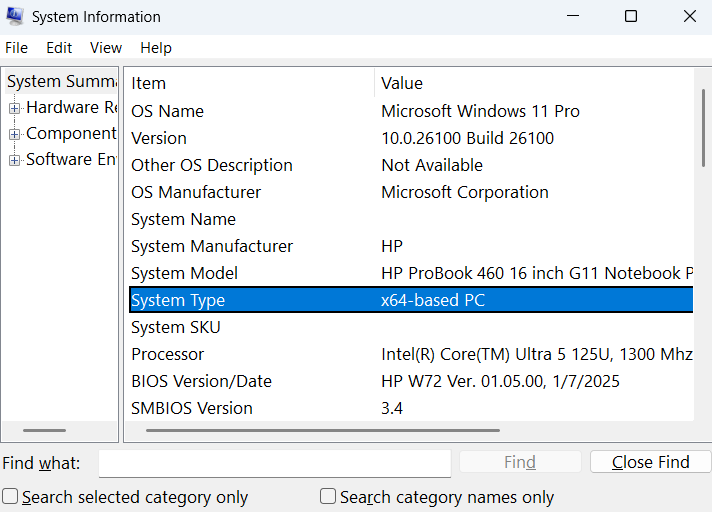
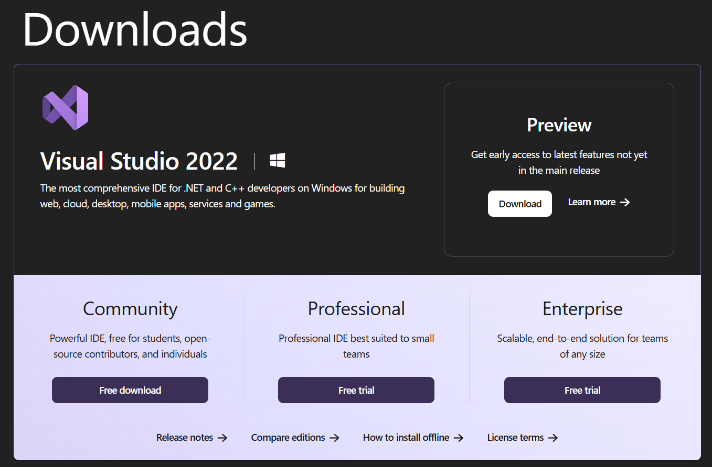
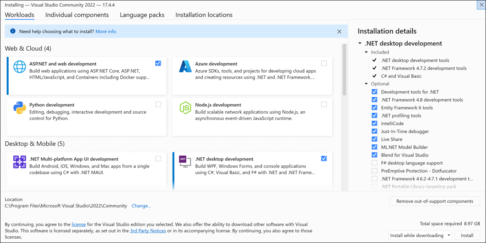
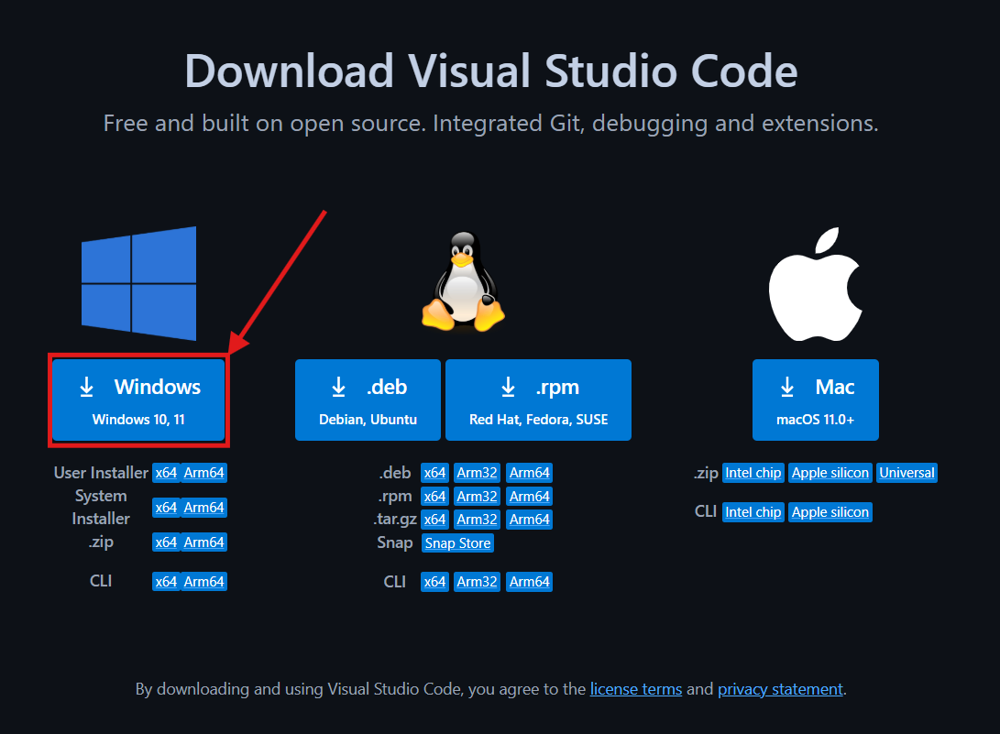
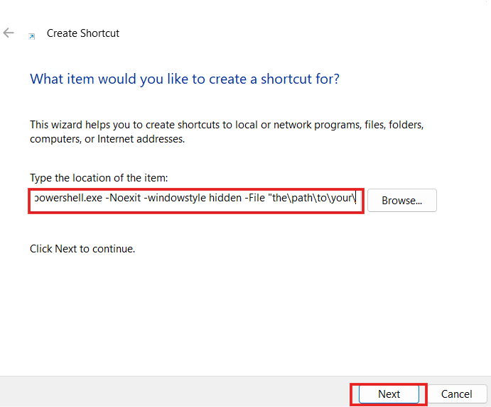
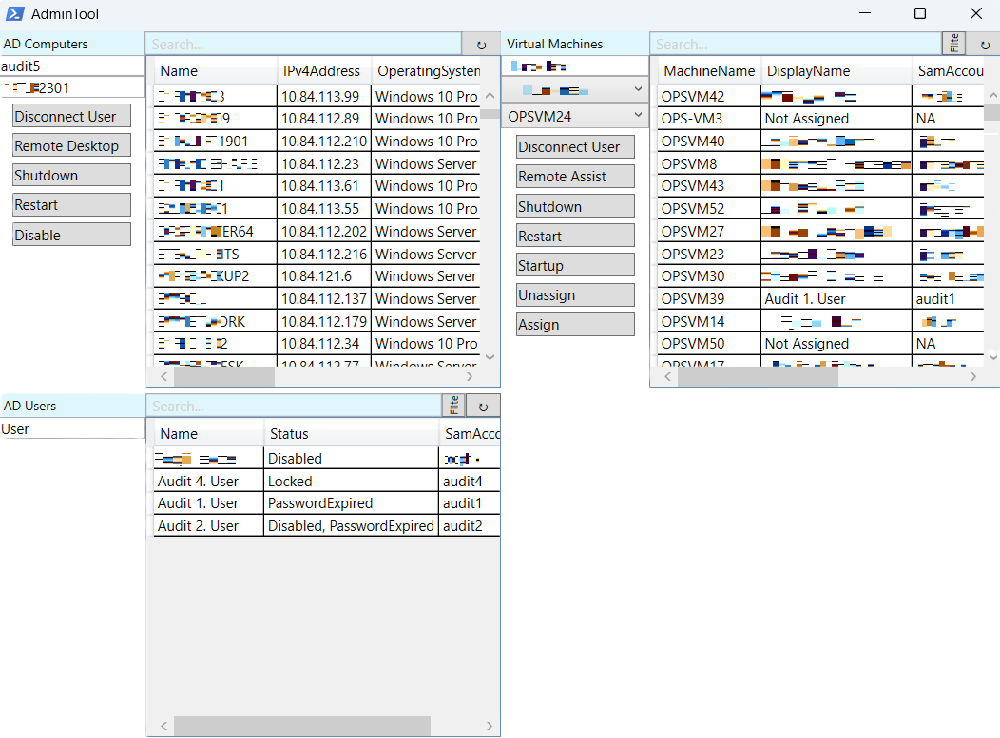
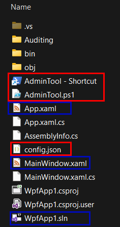

Overview
This instruction is for building a system administration tool for domain networks using Active Directory and PowerShell. The tool integrates with a graphical user interface (GUI) designed in Windows Presentation Foundation (WPF), and connects to Active Directory through the Remote Server Administration Tools (RSAT) module.
Prerequisites
- Windows Professional or Enterprise edition installed.
- Administrative permissions in Active Directory.
- Administrator rights on the local machine.
- PowerShell version 5.1 or higher.
Check your version by typing
$PSVersionTablein PowerShell. - .NET Framework installed.
Type
dotnetin the command prompt to confirm. - Recommended Hardware:
- 1.6 GHz or faster processor
- Minimum 4 GB of RAM
- Minimum of 850 MB up to 210 GB Hard disk space
- Visual Studio 2022 System Requirements:
- System Requirements: https://learn.microsoft.com/en-us/visualstudio/releases/2022/system-requirements
- License Terms: https://visualstudio.microsoft.com/license-terms/
Installation Guide
This section walks you through installing the essential tools for .NET and PowerShell development, including the .NET SDK, PowerShell, Visual Studio, and Visual Studio Code.
1. Install .NET SDK
The .NET SDK is often included with Windows, but if you need the latest version, download it manually from the following link:
https://dotnet.microsoft.com/en-us/download/dotnet/9.0 Select the correct version based on your system. You can check your system type by searching on Windows System Information
2. Install or Update PowerShell
PowerShell is usually pre-installed on Windows. To manually install or update it using Winget:
winget search Microsoft.PowerShell # Searches for PowerShell package
winget install --id Microsoft.PowerShell --source winget # Installs PowerShell from winget source (agree to terms if prompted)
3. Install Visual Studio 2022
Download and install the Community Edition from:
https://visualstudio.microsoft.com/downloads During installation:
- Go to the Workloads tab
- Select .NET Desktop Development
For individual components, keep the default. Also be sure to choose your preferred language.
4. Install Visual Studio Code
Download and install VS Code from:
https://code.visualstudio.com/downloads Then, install the PowerShell extension:
- Open VS Code
- Click the Extensions icon on the left sidebar
- Search for "PowerShell"
- Install the verified Microsoft PowerShell extension
Designing the UI (WPF)
Creating a WPF Project in Visual Studio
- Open Visual Studio 2022
- Click New Project
- Search for WPF App (.NET) with C#
- Set the project name and location
- Select .NET 9.0 if available
- Click Create
You can drag controls into the design pane or edit them in the XAML window. Each control has a name (x:Name) for PowerShell to reference.
<Grid x:Name="LoadingContent_grid" Panel.ZIndex="1" Visibility="Hidden" VerticalAlignment="Center" HorizontalAlignment="Center"/>
# This is a hidden loading panel centered on the screen
# It will be shown/hidden dynamically during script operations
| Icon | Control Name | Description |
|---|---|---|
| BorderElement | Adds a border around child content with optional padding. | |
| Button | Clickable control that triggers an action. | |
| Calendar | Displays a calendar UI for date selection. | |
| Canvas | Layout panel allowing absolute positioning of child elements. | |
| CheckBox | Allows user to select or deselect a boolean option. | |
| ComboBox | Drop-down list allowing selection from multiple options. | |
| ContentControl | Base class for controls containing a single piece of content. | |
| DataGrid | Displays and edits tabular data with rows and columns. | |
| DatePicker | Combines a text box and calendar for date input. | |
| DockPanel | Layout panel that docks child elements to edges. | |
| DocumentViewer | Displays XPS s with navigation and zoom. | |
| Ellipse | Draws an ellipse shape. | |
| Expander | Toggle-able section that shows/hides additional content. | |
| Frame | Hosts navigable pages, like a mini browser. | |
| Grid | Flexible layout container with rows and columns. | |
| GridSplitter | Allows resizing of columns or rows in a Grid. | |
| GroupBox | Container with a border and header for grouping controls. | |
| Image | Displays images from files or URIs. | |
| Label | Displays non-editable text, typically for descriptions. | |
|
|
ListBox | Shows a vertical list of selectable items. |
| ListView | Extended ListBox with layout, view, and column support. | |
| Media | Plays audio or video files. | |
| Menu | Container for a hierarchical set of menu items. | |
| PasswordBox | TextBox designed to securely input passwords (masked characters). | |
| ProgressBar | Shows progress of a task with visual bar. | |
| RadioButton | Select one option from a group of mutually exclusive options. | |
| Rectangle | Draws a rectangle shape. | |
| RichTextBox | Text editor supporting rich formatting (bold, font, etc.). | |
| ScrollBar | Adds vertical/horizontal scrolling capability. | |
| ScrollViewer | Makes any content scrollable in a defined area. | |
| Separator | Horizontal or vertical line used to separate content (typically in menus or toolbars). | |
|
|
Slider | Lets users select a numeric value along a range visually. |
| StackPanel | Arranges child elements in a vertical or horizontal line. | |
| StatusBar | Displays contextual status information at the bottom of an app. | |
| TabControl | Creates a tabbed interface for organizing multiple views. | |
| TextBlock | Lightweight control for displaying simple text. | |
| TextBox | Editable single- or multi-line text input. | |
| ToolBar | Row of buttons or controls usually for app commands. | |
| ToolBarPanel | Layout panel used inside a ToolBar. | |
| ToolBarTray | Container for multiple ToolBars. | |
| TreeView | Displays hierarchical data (like a file system tree). | |
| ViewBox | Scales content proportionally to fit available space. | |
| WebBrowser | Embeds a web browser to display HTML content. | |
| WindowsForm | Hosts WinForms controls in WPF (interop support). | |
| WrapPanel | Wraps child elements to the next line or column when out of space. | |
| Icons from Visual Studio Image Library. (2022). Microsoft Store - Download Center. https://www.microsoft.com/en-us/download/details.aspx?id=35825 | ||
Installing PowerShell Modules
Active Directory Module
Option 1: Use Windows Features GUI
- Open Control Panel > Programs > Turn Windows Features on or off
- Expand Remote Server Administration Tools
- Enable:
- Active Directory Domain Services Tools
- Active Directory Lightweight Directory Services Tools
Option 2: PowerShell Command
Get-WindowsCapability -Name RSAT* -Online | Add-WindowsCapability -Online
# Installs all RSAT capabilities (including AD tools) from Windows optional features
For environments supporting virtual desktops.
PowerCLI
- Open a PowerShell terminal and type:
Install-Module -Name VCF.PowerCLI
# Installs PowerCLI
HorizonView Helper Module
- Go to: https://github.com/vmware/PowerCLI-Example-Scripts/tree/master
- Click
 then download the zip folder from the dropdown.
then download the zip folder from the dropdown. - To install the module for your own user
-
Open the folder, open Modules and extract VMware.Hv.Helper to:
C:\Users\YourUsername\Documents\WindowsPowerShell\Modules
-
Open the folder, open Modules and extract VMware.Hv.Helper to:
- To install for everyone on the computer:
-
Open the folder, open Modules and extract VMware.Hv.Helper to:
C:\Program Files\WindowsPowerShell\Modules
-
Open the folder, open Modules and extract VMware.Hv.Helper to:
Starting PowerShell Project in VS Code
Creating the Script
- Open VS Code
- Create a new file and save as
.ps1inside your WPF project folder
At the top of the script, load the modules:
Import-Module ActiveDirectory # Loads the specified module
Import-Module VMWare.VimAutomation
Import-Module VMware.Hv.Helper
| Cmdlet | Description |
|---|---|
| Disable-ADAccount | Disables an Active Directory account. |
| Enable-ADAccount | Enables an Active Directory account. |
| Get-ADComputer | Gets one or more Active Directory computers. |
| Get-ADDefaultDomainPasswordPolicy | Gets the default password policy for an Active Directory domain. |
| Get-ADUser | Gets one or more Active Directory users. |
| Set-ADAccountExpiration | Sets the expiration date for an Active Directory account. |
| Set-ADAccountPassword | Modifies the password of an Active Directory account. |
| Set-ADUser | Modifies an Active Directory user. |
| Unlock-ADAccount | Unlocks an Active Directory account. |
Loading the WPF UI in PowerShell
Add this code to load the XAML file:
Add-Type -AssemblyName PresentationFramework # Required to use WPF UI elements
[xml]$MainXAML = Get-Content "Path\To\MainWindow.xaml" # Loads the XAML UI file
$MainXAMLReader = New-Object System.Xml.XmlNodeReader $MainXAML # Prepares the XML for parsing
$MainWindow = [Windows.Markup.XamlReader]::Load($MainXAMLReader) # Parses and loads the WPF window
<Window xmlns="http://schemas.microsoft.com/winfx/2006/xaml/presentation"
xmlns:x="http://schemas.microsoft.com/winfx/2006/xaml"
xmlns:av="http://schemas.microsoft.com/expression/blend/2008" xmlns:mc="http://schemas.openxmlformats.org/markup-compatibility/2006"
Title="AdminTool" Height="634" SizeToContent="Width" Width="848">
<Grid HorizontalAlignment="Center" Width="848">
<DockPanel LastChildFill="True" HorizontalAlignment="Left" Width="424" Height="300" VerticalAlignment="Top">
<DockPanel DockPanel.Dock="Top" Background="#FFDFF6FC">
<Label DockPanel.Dock="Left" Content="AD Computers" Height="20" FontSize="11" Padding="5,0,0,0" VerticalContentAlignment="Center" Background="{x:Null}" Width="Auto" HorizontalAlignment="Left" Margin="0,0,48,0"/>
<Button DockPanel.Dock="Right" x:Name="RefreshComputerList_btn" Content="↻" Height="20" FontFamily="Segoe UI Light" BorderBrush="Black" BorderThickness="0.25,0.25,0.25,0.25" IsDefault="True" Width="33"/>
<TextBox x:Name="ADComputerSearch_txtbx" TextWrapping="Wrap" Height="20">
<TextBox.Style>
<Style xmlns:sys="clr-namespace:System;assembly=mscorlib" TargetType="{x:Type TextBox}">
<Style.Resources>
<VisualBrush x:Key="CueBannerBrush" AlignmentX="Left" AlignmentY="Center" Stretch="None">
<VisualBrush.Visual>
<Label Content="Search..." Foreground="LightGray" />
</VisualBrush.Visual>
</VisualBrush>
</Style.Resources>
<Style.Triggers>
<Trigger Property="Text" Value="{x:Static sys:String.Empty}">
<Setter Property="Background" Value="{StaticResource CueBannerBrush}" />
</Trigger>
<Trigger Property="Text" Value="{x:Null}">
<Setter Property="Background" Value="{StaticResource CueBannerBrush}" />
</Trigger>
<Trigger Property="IsKeyboardFocused" Value="True">
<Setter Property="Background" Value="White" />
</Trigger>
</Style.Triggers>
</Style>
</TextBox.Style>
</TextBox>
</DockPanel>
<StackPanel DockPanel.Dock="left" Height="Auto" Width="125">
<TextBox x:Name="SelectedADPCUser_txtbx" TextWrapping="Wrap" Text="User" IsReadOnly="True"/>
<TextBox x:Name="SelectedADPCName_txtbx" TextWrapping="Wrap" Text="PC" IsReadOnly="True" Margin="0,0,0,5"/>
<Button Visibility="Hidden" x:Name="DiscoADComputer_btn" VerticalContentAlignment="Stretch" Margin="0,0,0,5" HorizontalContentAlignment="Stretch" Content="Disconnect User" Width="100"/>
<Button Visibility="Hidden" x:Name="RDPComputer_btn" VerticalContentAlignment="Stretch" Margin="0,0,0,5" HorizontalContentAlignment="Stretch" Content="Remote Desktop" Width="100"/>
<Button Visibility="Hidden" x:Name="RemoteAssistAD_btn" VerticalContentAlignment="Stretch" Margin="0,0,0,5" HorizontalContentAlignment="Stretch" Content="Remote Assist" Width="100"/>
<Button Visibility="Hidden" x:Name="ShutdownPC_btn" VerticalContentAlignment="Stretch" Margin="0,0,0,5" HorizontalContentAlignment="Stretch" Content="Shutdown" Width="100"/>
<Button Visibility="Hidden" x:Name="RestartPC_btn" VerticalContentAlignment="Stretch" Margin="0,0,0,5" HorizontalContentAlignment="Stretch" Content="Restart" Width="100"/>
<Button Visibility="Hidden" x:Name="DisableADComputer_btn" VerticalContentAlignment="Stretch" Margin="0,0,0,5" HorizontalContentAlignment="Stretch" Content="Disable" Width="100"/>
<Button Visibility="Hidden" x:Name="EnableADComputer_btn" VerticalContentAlignment="Stretch" Margin="0,0,0,5" HorizontalContentAlignment="Stretch" Content="Enable" Width="100"/>
</StackPanel>
<DataGrid DockPanel.Dock="Right" x:Name="AllADComp_Dgrid" CanUserSortColumns="True" SelectionUnit="FullRow" SelectionMode="Single" AutoGenerateColumns="True" IsReadOnly="True" IsManipulationEnabled="True" Height="Auto"/>
</DockPanel>
<DockPanel LastChildFill="True" Width="424" Margin="0,305,0,3" HorizontalAlignment="Left">
<DockPanel DockPanel.Dock="Top" Height="20" Background="#FFDFF6FC">
<Label DockPanel.Dock="Left" Content="AD Users" VerticalAlignment="Center" Height="20" FontSize="11" Padding="5,0,0,0" VerticalContentAlignment="Center" Background="#FFDFF6FC" BorderThickness="0.25,0.25,0.25,0.25" Margin="0,0,75,0"/>
<Button DockPanel.Dock="Right" x:Name="ADUserListRefresh_btn" Content="↻" Height="Auto" Width="30"/>
<StackPanel DockPanel.Dock="Right" x:Name="FilterPanel_stckpnl" Orientation="Horizontal" Visibility="Collapsed" Width="Auto">
<CheckBox x:Name="FilterADLocked_cb" Content="Locked" Height="20" VerticalContentAlignment="Center" FontSize="11" HorizontalContentAlignment="Stretch" Width="60" FlowDirection="LeftToRight"/>
<CheckBox x:Name="FilterADExpired_cb" Content="Expired" Height="20" VerticalContentAlignment="Center" FontSize="11" HorizontalContentAlignment="Stretch" Width="60" FlowDirection="LeftToRight"/>
<CheckBox x:Name="FilterADDisabled_cb" Content="Disabled" Height="20" VerticalContentAlignment="Center" FontSize="11" HorizontalContentAlignment="Stretch" Width="64" FlowDirection="LeftToRight" Padding="0,0,0,0"/>
</StackPanel>
<Button DockPanel.Dock="Right" x:Name="FilterPanelExpand_btn" Content="Filter" Width="20" HorizontalContentAlignment="Center" FontSize="9" RenderTransformOrigin="0.5,0.5" Height="20">
<Button.RenderTransform>
<TransformGroup>
<ScaleTransform ScaleY="1"/>
<SkewTransform/>
<RotateTransform Angle="-90"/>
<TranslateTransform/>
</TransformGroup>
</Button.RenderTransform>
</Button>
<TextBox DockPanel.Dock="Top" x:Name="ADUserSearch_txtbx" TextWrapping="Wrap" MinWidth="80" Height="Auto" Width="Auto" >
<TextBox.Style>
<Style xmlns:sys="clr-namespace:System;assembly=mscorlib" TargetType="{x:Type TextBox}">
<Style.Resources>
<VisualBrush x:Key="CueBannerBrush" AlignmentX="Left" AlignmentY="Center" Stretch="None">
<VisualBrush.Visual>
<Label Content="Search..." Foreground="LightGray" />
</VisualBrush.Visual>
</VisualBrush>
</Style.Resources>
<Style.Triggers>
<Trigger Property="Text" Value="{x:Static sys:String.Empty}">
<Setter Property="Background" Value="{StaticResource CueBannerBrush}" />
</Trigger>
<Trigger Property="Text" Value="{x:Null}">
<Setter Property="Background" Value="{StaticResource CueBannerBrush}" />
</Trigger>
<Trigger Property="IsKeyboardFocused" Value="True">
<Setter Property="Background" Value="White" />
</Trigger>
</Style.Triggers>
</Style>
</TextBox.Style>
</TextBox>
</DockPanel>
<StackPanel DockPanel.Dock="Left" Height="Auto" ScrollViewer.HorizontalScrollBarVisibility="Auto" CanHorizontallyScroll="True" CanVerticallyScroll="True" Width="125">
<TextBox x:Name="SelectedUser_txtbx" TextWrapping="Wrap" Text="User" IsReadOnly="True"/>
<Button x:Name="UserUnlock_btn" Visibility="Collapsed" Content="Unlock" Height="20" Margin="0,8,0,8"/>
<Button x:Name="UserDisable_btn" Visibility="Collapsed" Content="Disable" Height="20" Margin="0,0,0,8"/>
<Button x:Name="UserEnable_btn" Visibility="Collapsed" Content="Enable" Height="20" Margin="0,0,0,8"/>
<DockPanel Visibility="Collapsed" LastChildFill="True" x:Name="PasswordOptions_dock" Width="Auto" Height="Auto" Margin="0,4,0,0">
<Label DockPanel.Dock="Top" Content="Password Options" Height="12" Padding="0,0,0,0" HorizontalContentAlignment="Center" VerticalContentAlignment="Center" Background="#FFDFF6FC" BorderBrush="#3F0562B5" BorderThickness="0,1,0,0" FontSize="8"/>
<Button x:Name="UserExpirePass_btn" DockPanel.Dock="Bottom" Content="Expire" Height="20" Margin="0,4,0,0"/>
<Button DockPanel.Dock="Left" IsEnabled="False" x:Name="UserSetPass_btn" Content="Set" Width="24" Height="20"/>
<DockPanel DockPanel.Dock="Right" Height="20" Width="24" >
<Button DockPanel.Dock="Top" x:Name="PreviewPass_btn" Content="Show
" ToolTip="Show/Hide Password" Height="10" BorderBrush="#FFABADB3" Width="24" Foreground="#7F000000" FontSize="7" Padding="1,1,1,1" UseLayoutRounding="True"/>
<Button DockPanel.Dock="Bottom" x:Name="CopyPass_btn" Content="Copy
" ToolTip="Copy Password" Height="10" BorderBrush="#FFABADB3" Width="24" Foreground="#7F000000" FontSize="8" Padding="1,1,1,1" UseLayoutRounding="True" Margin="0,0,0,-1"/>
</DockPanel>
<PasswordBox x:Name="SetPass_txtbx" ToolTip="Set Password" Height="20"/>
</DockPanel>
</StackPanel>
<DataGrid x:Name="ADUser_list" SelectionUnit="FullRow" CanUserSortColumns="True" AutoGenerateColumns="True" IsReadOnly="True" IsManipulationEnabled="True" Width="Auto" Height="Auto"/>
</DockPanel>
<DockPanel LastChildFill="True" HorizontalAlignment="Right" Width="424" Height="300" VerticalAlignment="Top">
<DockPanel DockPanel.Dock="Top" Background="#FFDFF6FC">
<Label DockPanel.Dock="Left" Content="Virtual Machines" Height="20" FontSize="11" Padding="5,0,0,0" VerticalContentAlignment="Center" Background="{x:Null}" Width="Auto" HorizontalAlignment="Left" Margin="0,0,39,0"/>
<Button DockPanel.Dock="Right" x:Name="RefreshVMList_btn" Content="↻" Height="20" FontFamily="Segoe UI Light" BorderBrush="Black" BorderThickness="0.25,0.25,0.25,0.25" IsDefault="True" Width="33"/>
<StackPanel DockPanel.Dock="Right" x:Name="FilterVMServ_stckpnl" Orientation="Horizontal" Visibility="Collapsed" Width="Auto" ScrollViewer.HorizontalScrollBarVisibility="Auto" ScrollViewer.VerticalScrollBarVisibility="Auto" CanHorizontallyScroll="True" ScrollViewer.CanContentScroll="True"/>
<Button DockPanel.Dock="Right" x:Name="FilterVMServ_btn" Content="Filter" Width="20" HorizontalContentAlignment="Center" FontSize="9" RenderTransformOrigin="0.5,0.5" Height="20">
<Button.RenderTransform>
<TransformGroup>
<ScaleTransform ScaleY="1"/>
<SkewTransform/>
<RotateTransform Angle="-90"/>
<TranslateTransform/>
</TransformGroup>
</Button.RenderTransform>
</Button>
<TextBox DockPanel.Dock="Top" x:Name="VMSearch_txtbx" TextWrapping="Wrap" MinWidth="119.6" Height="Auto" Width="Auto" >
<TextBox.Style>
<Style xmlns:sys="clr-namespace:System;assembly=mscorlib" TargetType="{x:Type TextBox}">
<Style.Resources>
<VisualBrush x:Key="CueBannerBrush" AlignmentX="Left" AlignmentY="Center" Stretch="None">
<VisualBrush.Visual>
<Label Content="Search..." Foreground="LightGray" />
</VisualBrush.Visual>
</VisualBrush>
</Style.Resources>
<Style.Triggers>
<Trigger Property="Text" Value="{x:Static sys:String.Empty}">
<Setter Property="Background" Value="{StaticResource CueBannerBrush}" />
</Trigger>
<Trigger Property="Text" Value="{x:Null}">
<Setter Property="Background" Value="{StaticResource CueBannerBrush}" />
</Trigger>
<Trigger Property="IsKeyboardFocused" Value="True">
<Setter Property="Background" Value="White" />
</Trigger>
</Style.Triggers>
</Style>
</TextBox.Style>
</TextBox>
</DockPanel>
<StackPanel DockPanel.Dock="left" Height="Auto" Width="125">
<TextBox x:Name="ConnectedVMUser_txtbx" TextWrapping="Wrap" Text="Connected User" IsReadOnly="True"/>
<ComboBox x:Name="SelectedVMUser_cmbbx" Visibility="Visible" Text="User"/>
<ComboBox x:Name="SelectedVMName_cmbbx" Visibility="Visible" Text="PC" Margin="0,0,0,5"/>
<Button x:Name="DiscoVMComputer_btn" Visibility="Visible" VerticalContentAlignment="Stretch" Margin="0,0,0,5" HorizontalContentAlignment="Stretch" Content="Disconnect User" Width="100"/>
<Button x:Name="RemoteAssistVM_btn" Visibility="Visible" VerticalContentAlignment="Stretch" Margin="0,0,0,5" HorizontalContentAlignment="Stretch" Content="Remote Assist" Width="100"/>
<Button x:Name="ShutdownVM_btn" Visibility="Visible" VerticalContentAlignment="Stretch" Margin="0,0,0,5" HorizontalContentAlignment="Stretch" Content="Shutdown" Width="100"/>
<Button x:Name="RestartVM_btn" Visibility="Visible" VerticalContentAlignment="Stretch" Margin="0,0,0,5" HorizontalContentAlignment="Stretch" Content="Restart" Width="100"/>
<Button x:Name="StartupVM_btn" Visibility="Visible" VerticalContentAlignment="Stretch" Margin="0,0,0,5" HorizontalContentAlignment="Stretch" Content="Startup" Width="100"/>
<Button x:Name="UnassignVM_btn" Visibility="Visible" VerticalContentAlignment="Stretch" Margin="0,0,0,5" HorizontalContentAlignment="Stretch" Content="Unassign" Width="100"/>
<Button x:Name="AssignVM_btn" Visibility="Visible" VerticalContentAlignment="Stretch" Margin="0,0,0,5" HorizontalContentAlignment="Stretch" Content="Assign" Width="100"/>
</StackPanel>
<DataGrid DockPanel.Dock="Right" x:Name="AllVMComp_Dgrid" CanUserSortColumns="True" SelectionUnit="FullRow" SelectionMode="Single" AutoGenerateColumns="True" IsReadOnly="True" IsManipulationEnabled="True" Height="Auto"/>
</DockPanel>
<TextBox x:Name="PassPreview_txtbx"
Panel.ZIndex="999"
Visibility="Hidden"
VerticalAlignment="Top"
HorizontalAlignment="Left"
Margin="24,447,0,0"
MinWidth="77" Height="20" Width="77"/>
</Grid>
</Window>
<Application x:Class="WpfApp1.App"
xmlns="http://schemas.microsoft.com/winfx/2006/xaml/presentation"
xmlns:x="http://schemas.microsoft.com/winfx/2006/xaml"
xmlns:local="clr-namespace:WpfApp1"
StartupUri="MainWindow.xaml">
<Application.Resources>
<Style TargetType="{x:Type Button}">
<Setter Property="Background">
<Setter.Value>
<RadialGradientBrush RadiusX="1.25" RadiusY="1.25">
<GradientStop Color="#FFAFACAC" Offset="1"/>
<GradientStop Color="White" Offset="0"/>
</RadialGradientBrush>
</Setter.Value>
</Setter>
<Setter Property="Template">
<Setter.Value>
<ControlTemplate TargetType="{x:Type Button}">
<Border Background="{TemplateBinding Background}">
<ContentPresenter HorizontalAlignment="Center" VerticalAlignment="Center"/>
</Border>
</ControlTemplate>
</Setter.Value>
</Setter>
<Setter Property="BorderBrush" Value="#FF676767"/>
<Style.Triggers>
<Trigger Property="IsMouseOver" Value="True">
<Setter Property="Background" Value="#FFDADADA"/>
</Trigger>
</Style.Triggers>
</Style>
</Application.Resources>
</Application>
Using a Config File
Create config.json in your project folder:
{
"VI_Servers": [], # Store your VSphere server domains
"HV_Servers": [], # Store your HorizonView server domains
"User_Exclusions": [], # Users you don't want included in AD Users panel
"Computer_Exclusions": [], # Computers you don't want included in AD Computers panel
"OU_Exclusions": [] # Organizational Units you don't want included in Computers Panel
}
JSON config holds lists for exclusions (users, computers, OUs)
Load it in PowerShell by adding to your script:
$configPath = "Path\To\config.json" # File path to your config file
$config = Get-Content -Path $configPath -Raw | ConvertFrom-Json # Loads and parses the JSON into a PowerShell object
Binding Controls to Variables
Assign a control to a variable:
$DiscoADComputer_btn = $MainWindow.FindName("DiscoADComputer_btn")
# Binds the button from XAML by name so you can interact with it in script
$ADUser_list = $MainWindow.FindName("ADUser_list")
$PassPreview_txtbx = $MainWindow.FindName("PassPreview_txtbx")
$SetPass_txtbx = $MainWindow.FindName("SetPass_txtbx")
$PreviewPass_btn = $MainWindow.FindName("PreviewPass_btn")
$CopyPass_btn = $MainWindow.FindName("CopyPass_btn")
$UserSetPass_btn = $MainWindow.FindName("UserSetPass_btn")
$PasswordOptions_dock = $MainWindow.FindName("PasswordOptions_dock")
$UserExpirePass_btn = $MainWindow.FindName("UserExpirePass_btn")
$ADUserListRefresh_btn = $MainWindow.FindName("ADUserListRefresh_btn")
$UserUnlock_btn = $MainWindow.FindName("UserUnlock_btn")
$UserDisable_btn = $MainWindow.FindName("UserDisable_btn")
$UserEnable_btn = $MainWindow.FindName("UserEnable_btn")
$ADUserSearch_txtbx = $MainWindow.FindName("ADUserSearch_txtbx")
$FilterPanelExpand_btn = $MainWindow.FindName("FilterPanelExpand_btn")
$FilterPanel_stckpnl = $MainWindow.FindName("FilterPanel_stckpnl")
$SelectedUser_txtbx = $MainWindow.FindName("SelectedUser_txtbx")
$FilterADLocked_cb = $MainWindow.FindName("FilterADLocked_cb")
$FilterADDisabled_cb = $MainWindow.FindName("FilterADDisabled_cb")
$FilterADExpired_cb = $MainWindow.FindName("FilterADExpired_cb")
$ADComputerSearch_txtbx = $MainWindow.FindName("ADComputerSearch_txtbx")
$AllADComp_Dgrid = $MainWindow.FindName("AllADComp_Dgrid")
$RefreshComputerList_btn= $MainWindow.FindName("RefreshComputerList_btn")
$DiscoADComputer_btn = $MainWindow.FindName("DiscoADComputer_btn")
$RDPComputer_btn = $MainWindow.FindName("RDPComputer_btn")
$RemoteAssistAD_btn = $MainWindow.FindName("RemoteAssistAD_btn")
$ShutdownPC_btn = $MainWindow.FindName("ShutdownPC_btn")
$RestartPC_btn = $MainWindow.FindName("RestartPC_btn")
$DisableADComputer_btn = $MainWindow.FindName("DisableADComputer_btn")
$EnableADComputer_btn = $MainWindow.FindName("EnableADComputer_btn")
$SelectedADPCUser_txtbx = $MainWindow.FindName("SelectedADPCUser_txtbx")
$SelectedADPCName_txtbx = $MainWindow.FindName("SelectedADPCName_txtbx")
$RefreshVMList_btn = $MainWindow.FindName("RefreshVMList_btn")
$AllVMComp_Dgrid = $MainWindow.FindName("AllVMComp_Dgrid")
$VMSearch_txtbx = $MainWindow.FindName("VMSearch_txtbx")
$SelectedVMUser_cmbbx = $MainWindow.FindName("SelectedVMUser_cmbbx")
$SelectedVMName_cmbbx = $MainWindow.FindName("SelectedVMName_cmbbx")
$DiscoVMComputer_btn = $MainWindow.FindName("DiscoVMComputer_btn")
$RemoteAssistVM_btn = $MainWindow.FindName("RemoteAssistVM_btn")
$ShutdownVM_btn = $MainWindow.FindName("ShutdownVM_btn")
$RestartVM_btn = $MainWindow.FindName("RestartVM_btn")
$StartupVM_btn = $MainWindow.FindName("StartupVM_btn")
$UnassignVM_btn = $MainWindow.FindName("UnassignVM_btn")
$AssignVM_btn = $MainWindow.FindName("AssignVM_btn")
$FilterVMServ_stckpnl = $MainWindow.FindName("FilterVMServ_stckpnl")
$FilterVMServ_btn = $MainWindow.FindName("FilterVMServ_btn")
$ConnectedVMUser_txtbx = $MainWindow.FindName("ConnectedVMUser_txtbx")
A breakdown of what is happening is our XAML file, now called MainWindow from the perspective of PowerShell, is using the built-in function from the WPF PowerShell assembly that we established first, FindName.
It is looking for the control with the name DiscoADComputer_btn and assigns it to a variable in PowerShell that has the same name, just with a $ in front of it, since that is PowerShell’s convention for a variable.
You can use whatever name you want, but I simply used the same name for consistency and to know which control I am working with.
The next step is to add an event handler to our control so when we interact with the variable on the interface, it will call a series of commands.
An example of an event handler is shown below:
$DiscoADComputer_btn.Add_Click({
$SelectedComp = $SelectedADPCName_txtbx.Text # Gets the value from a textbox named "SelectedADPCName_txtbx"
Disconnect_ActiveUser($SelectedComp) # Calls a custom function to disconnect the selected user
})
# Runs when the button is clicked
$FilterPanelExpand_btn.Add_Click({
switch ($FilterPanel_stckpnl.Visibility) {
"Collapsed" {
$FilterPanel_stckpnl.Visibility = "Visible"
$FilterPanelExpand_btn.Content = ". . ."
}
"Visible" {
$FilterPanel_stckpnl.Visibility = "Collapsed"
$FilterPanelExpand_btn.Content = "Filter"
}
}
})
$FilterADLocked_cb.Add_Checked({
Update_FilteredUserList
})
$FilterADLocked_cb.Add_Unchecked({
Update_FilteredUserList
})
$FilterADExpired_cb.Add_Checked({
Update_FilteredUserList
})
$FilterADExpired_cb.Add_Unchecked({
Update_FilteredUserList
})
$FilterADDisabled_cb.Add_Checked({
Update_FilteredUserList
})
$FilterADDisabled_cb.Add_Unchecked({
Update_FilteredUserList
})
$ADUserSearch_txtbx.Add_TextChanged({
Search_ADUsers
})
$UserUnlock_btn.Add_Click({
Unlock_SelectedUser($ADUser_list.SelectedItem.SamAccountName)
})
$UserExpirePass_btn.Add_Click({
Expire_SelectedUser($ADUser_list.SelectedItem.SamAccountName)
})
$UserSetPass_btn.Add_Click({
if($null -eq $SetPass_txtbx.Password.Trim()){
[System.Windows.MessageBox]::Show("No password entered.")
} else {
Set_SelectedUserPass($ADUser_list.SelectedItem.SamAccountName)
}
})
$UserDisable_btn.Add_Click({
Disable_SelectedAccount($ADUser_list.SelectedItem.SamAccountName)
})
$UserEnable_btn.Add_Click({
Enable_SelectedAccount($ADUser_list.SelectedItem.SamAccountName)
})
$ADUserListRefresh_btn.Add_Click({
Get_ADUsers
Get_ADUserstatus
$ADUser_list.ItemsSource = $script:ADUserStatus
$FilterADLocked_cb.IsChecked = "False"
$FilterADExpired_cb.IsChecked = "False"
$FilterADDisabled_cb.IsChecked = "False"
})
$ADUser_list.Add_SelectionChanged({
$SelectedUser_txtbx.Text = $ADUser_List.SelectedItem.Name
})
$PreviewPass_btn.Add_PreviewMouseLeftButtonDown({
$PassPreview_txtbx.text = $SetPass_txtbx.Password
$SetPass_txtbx.Visibility = [System.Windows.Visibility]::Collapsed
$PassPreview_txtbx.Visibility = [System.Windows.Visibility]::Visible
$PassPreview_txtbx.Width = ($PassPreview_txtbx.Text.Length * $PassPreview_txtbx.FontSize) * 0.55
})
$PreviewPass_btn.Add_PreviewMouseLeftButtonUp({
$PassPreview_txtbx.Text = ""
$SetPass_txtbx.Visibility = [System.Windows.Visibility]::Visible
$PassPreview_txtbx.Visibility = [System.Windows.Visibility]::Collapsed
[System.Windows.Controls.Panel]::SetZIndex($PassPreview_txtbx, 0)
})
$CopyPass_btn.Add_Click({
$Password = $SetPass_txtbx.Password
[System.Windows.Clipboard]::SetText($Password)
})
$ADUser_list.Add_SelectionChanged({
$script:SelectedADUser = $ADUser_list.SelectedItem.SamAccountName
$PasswordOptions_dock.Visibility = "Visible"
$Enabled = (Get-ADUser -Identity $SelectedUser | Select-Object Enabled).Enabled
if($Enabled){
$UserDisable_btn.Visibility = "Visible"
$UserEnable_btn.Visibility = "Collapsed"
} else {
$UserDisable_btn.Visibility = "Collapsed"
$UserEnable_btn.Visibility = "Visible"
}
$Locked = (Get-ADUser -Identity $SelectedUser | Select-Object LockedOut).LockedOut
if($Locked){
$UserDisable_btn.Visibility = "Visible"
$UserEnable_btn.Visibility = "Collapsed"
} else {
$UserDisable_btn.Visibility = "Collapsed"
$UserEnable_btn.Visibility = "Visible"
}
})
$RefreshComputerList_btn.Add_Click({
Get_ADComputers
$AllADComp_Dgrid.ItemsSource = $script:ADComputers
})
$ADComputerSearch_txtbx.Add_TextChanged({
Search_ADComputers
})
$DiscoADComputer_btn.Add_Click({
Disconnect_ActiveUser -ComputerName $script:SelectedADComputer
})
$RemoteAssistAD_btn.Add_Click({
Send_RemAssist -ComputerName $script:SelectedADComputer
})
$ShutdownPC_btn.Add_Click({
Stop_Computer -ComputerName $script:SelectedADComputer
})
$RestartPC_btn.Add_Click({
Restart_Computer -ComputerName $script:SelectedADComputer
})
$DisableADComputer_btn.Add_Click({
Disable_SelectedAccount -selectedAccount $script:SelectedADComputer
})
$EnableADComputer_btn.Add_Click({
Enable_SelectedAccount -selectedAccount $script:SelectedADComputer
})
$AllADComp_Dgrid.Add_SelectionChanged({
$script:SelectedADComputer = $AllADComp_Dgrid.SelectedItem.Name
$SelectedADPCName_txtbx.Text = $script:SelectedADComputer
if($script:SelectedADComputer){
$ShutdownPC_btn.Visibility = "Visible"
$RestartPC_btn.Visibility = "Visible"
$Enabled = (Get-ADComputer -Identity $script:SelectedADComputer | Select-Object Enabled).Enabled
if($Enabled){
$DisableADComputer_btn.Visibility = "Visible"
$EnableADComputer_btn.Visibility = "Collapsed"
} else {
$DisableADComputer_btn.Visibility = "Collapsed"
$EnableADComputer_btn.Visibility = "Visible"
}
$SelectedADPCUser_txtbx.Text = (Get_ActiveUser($script:SelectedADComputer)).Name
if(-not $SelectedADPCUser_txtbx.Text -eq ""){
$DiscoADComputer_btn.Visibility = "Visible"
$RemoteAssistAD_btn.Visibility = "Visible"
$RDPComputer_btn.Visibiibility = "Collapsed"
$RemoteAssistAD_btn.Visibility = "Collapsed"
$RDPComputer_btn.Visibility = "Visible"
}
} else {
$DiscoADComputer_btn.Visibility = "Collapsed"
$RDPComputer_btn.Visibility = "Collapsed"
$RemoteAssistAD_btn.Visibility = "Collapsed"
$ShutdownPC_btn.Visibility = "Collapsed"
$RestartPC_btn.Visibility = "Collapsed"
$DisableADComputer_btn.Visibility = "Collapsed"
$EnableADComputer_btn.Visibility = "Collapsed"
}
})
$FilterVMServ_btn.Add_Click({
switch ($FilterVMServ_stckpnl.Visibility) {
"Collapsed" {
$FilterVMServ_stckpnl.Visibility = "Visible"
$FilterVMServ_btn.Content = ". . ."
}
"Visible" {
$FilterVMServ_stckpnl.Visibility = "Collapsed"
$FilterVMServ_btn.Content = "Filter"
}
}
})
$RefreshVMList_btn.Add_Click({
Connect_VIServers
Get_VMList
$script:ServerCheckBoxes = @()
$FilterVMServ_stckpnl.Children.Clear()
$AllVMComp_Dgrid.ItemsSource = $null
$AllVMComp_Dgrid.ItemsSource = $script:VMList
$script:VMList | Where-Object { $_.Server } | Select-Object -ExpandProperty Server -Unique | Sort-Object | ForEach-Object {
$server = $_
$cb = New-Object System.Windows.Controls.CheckBox
$cb.Content = $server
$cb.Tag = $server
$cb.MaxWidth = "45"
$cb.Add_Checked({
Filter_VMGrid
})
$cb.Add_Unchecked({
Filter_VMGrid
})
$FilterVMServ_stckpnl.Children.Add($cb) | Out-Null
$script:ServerCheckBoxes += $cb
}
})
$AllVMComp_Dgrid.Add_SelectionChanged({
$script:SelectedVMUser = $AllVMComp_Dgrid.SelectedItem.SamAccountName
$script:SelectedVM = $AllVMComp_Dgrid.SelectedItem.MachineName
$script:SelectedServer = $AllVMComp_Dgrid.SelectedItem.Server
if ($script:SelectedVM) {
$vmIndex = $SelectedVMName_cmbbx.Items.IndexOf($script:SelectedVM)
if ($vmIndex -ge 0) { $SelectedVMName_cmbbx.SelectedIndex = $vmIndex }
}
if ($script:SelectedVMUser) {
$userIndex = $SelectedVMUser_cmbbx.Items.IndexOf($script:SelectedVMUser)
if ($userIndex -ge 0) { $SelectedVMUser_cmbbx.SelectedIndex = $userIndex }
}
$ConnectedVMUser_txtbx.Text = (Get_ActiveUser($script:SelectedVM)).Name
})
$VMSearch_txtbx.Add_TextChanged({
Search_VMGrid
})
$DiscoVMComputer_btn.Add_Click({
$script:SelectedVM
Disconnect_ActiveUser -SelectedComputer $script:SelectedVM
})
$RemoteAssistVM_btn.Add_Click({
Send_RemAssist -SelectedComputer $script:SelectedVM
})
$ShutdownVM_btn.Add_Click({
Stop_VM -machine $script:SelectedVM
})
$RestartVM_btn.Add_Click({
Restart_VM -machine $script:SelectedVM -server $script:SelectedServer
})
$StartupVM_btn.Add_Click({
Start_VM -machine $script:SelectedVM
})
$UnassignVM_btn.Add_Click({
Unassign_VM -machine $script:SelectedVM -server $script:SelectedServer
})
$AssignVM_btn.Add_Click({
$AssignedMachine = $SelectedVMName_cmbbx.SelectedItem
$AssignedUser = $SelectedVMUser_cmbbx.SelectedItem
$AssignedMachineServer = $script:VMList | Where-Object { $_.MachineName -like $AssignedMachine } | Select-Object Server
Assign_VM -machine $AssignedMachine -server $AssignedMachineServer -User $AssignedUser
})
We are calling the PowerShell variable that is now assigned to our control button and using an event handler Add_Click, which does exactly what it sounds like. When you add a click to the button, it will call the defined function.
The function in the example will get the text from the variable $SelectedADPCName_txtbx (which is assigned to another WPF control, a TextBox) and sends the text string to a function called Disconnect_ActiveUser.
The $SelectedComp variable inside the parentheses is assigned the text from the TextBox and is used as a parameter for the function.
To summarize: On the click of the button, it will read the name of a selected computer from a textbox and disconnect the active user on that computer.
Functions
To use code repetitively, we call on functions. Functions are considered “black boxes” in the sense that they have a single input and output, and the code that it performs is contained and doesn’t require us knowing how it works to use it. The example below shows the “Get Active User” function and from the first two lines we can interpret it takes a computer name and gets the active user logged into it. We use a “Return” statement to end the function and return the value after the calculations have been performed. This instruction does not cover the PowerShell programming commands, but there are notes in the example that describe the step-by-step actions being performed.
Function Example: Get Active User
function Get_ActiveUser { # Name of the function
param([string]$ComputerName) # Parameters to be passed into the function
$lines = query user /server:$ComputerName 2>$null # Stores the query of the user sessions on target computer
foreach ($line in $lines) { # Loops each line in the query
if ($line -match '^\s*USERNAME\s+SESSIONNAME')
{continue} # Skips the column header line
$session_info = $line -split '\s{2,}' # Splits the next line into a table by delimiter
if ($session_info[3] -eq "Active") { # Checks if the user is the Active user
return [pscustomobject]@{ # Will loop if not active user to check the next line
Name = $session_info[0].Trim() # Returns a table with columns “Name” and
Session = $session_info[1] # “Session” to the part of the script it was called
}
}
}
return "No Active Session" # If there is no Active user it will send this message
}
function Get_Credentials {
try {
if (-not $script:admin.password -or -not $script:admin.username){
$credential = Get-Credential
$script:admin = [pscustomobject]@{
username = $credential.UserName
password = (New-Object PSCredential 0, $credential.Password).GetNetworkCredential().Password
}
}
}
catch {}
}
function Confirm_Action {
param([string]$Title,[string]$Message)
$confirmation = [System.Windows.MessageBox]::Show(
$Message,
$Title,
[System.Windows.MessageBoxButton]::YesNo,
[System.Windows.MessageBoxImage]::Question
)
return $confirmation
}
function Get_ADUsers {
$UserExclusions = $config.User_Exclusions
$script:ADUsers = Get-ADUser -Filter * -Properties * |
Where-Object {
$_.SamAccountName -notin $UserExclusions
}
}
function Get_ADUserstatus {
$now = Get-Date
$ADUserStatusList = $script:ADUsers | ForEach-Object {
$statusList = @()
if ($_.LockedOut) { $statusList += "Locked" }
if (-not $_.Enabled) { $statusList += "Disabled" }
if ($_.AccountExpirationDate -and $_.AccountExpirationDate -lt $now) { $statusList += "Expired" }
if ($_.PasswordExpired) { $statusList += "PasswordExpired" }
[PSCustomObject]@{
Name = $_.Name
Status = $statusList -join ", "
SamAccountName = $_.SamAccountName
}
}
$script:ADUserStatus = [System.Windows.Data.CollectionViewSource]::GetDefaultView(@($ADUserStatusList))
}
function Search_ADUsers {
$searchText = $ADUserSearch_txtbx.Text.Trim().ToLower()
$filteredSource = $script:ADUserStatus | Where-Object {
if (-not [string]::IsNullOrWhiteSpace($searchText)) {
$fields = @($_.Name, $_.Status, $_.SamAccountName)
return $fields | Where-Object { $_ -and $_.ToString().ToLower().Contains($searchText) }
}
return $true
}
$ADUser_list.ItemsSource = [System.Windows.Data.CollectionViewSource]::GetDefaultView(@($filteredSource))
}
function Unlock_SelectedUser {
param ([string]$selectedUser)
Unlock-ADAccount -Identity $selectedUser
[System.Windows.MessageBox]::Show("$selectedUser Unlocked")
}
function Expire_SelectedUser {
param ([string]$selectedUser)
$confirm = Confirm_Action -Title "Expire Password?" -Message "Are you sure you want to expire the password for '$($selectedUser.Name)'?"
if ($confirm -eq "Yes") {
Set-ADUser -Identity $selectedUser -ChangePasswordAtLogon $true
[System.Windows.MessageBox]::Show("Password for $($selectedUser.Name) set to expire at next logon.")
}
}
function Disable_SelectedAccount {
param ([string]$selectedAccount)
$confirm = Confirm_Action -Title "Disable Account?" -Message "Are you sure you want to disable '$($selectedAccount)'?"
if ($confirm -eq "Yes") {
Disable-ADAccount -Identity $SelectedAccount
[System.Windows.MessageBox]::Show("$SelectedAccount set to disabled.")
}
}
function Enable_SelectedAccount {
param ([string]$selectedAccount)
$confirm = Confirm_Action -Title "Enable Account?" -Message "Are you sure you want to enable '$($selectedAccount)'?"
if ($confirm -eq "Yes") {
Enable-ADAccount -Identity $SelectedAccount
[System.Windows.MessageBox]::Show("$SelectedAccount set to enabled.")
}
}
function Set_SelectedUserPass {
param ([string]$SelectedUser)
$password = $SetPass_txtbx.Password
$confirm = Confirm_Action -Title "Reset Password?" -Message "Reset password for '$($SelectedUser)'?"
if ($confirm -eq "Yes") {
Set-ADAccountPassword -Identity $SelectedUser -Reset -NewPassword (ConvertTo-SecureString $password -AsPlainText -Force)
[System.Windows.MessageBox]::Show("Password for $(SelectedUser) has been reset. Make sure to expire if you want to change it at next logon.")
}
}
function Update_FilteredUserList {
$showLocked = $FilterADLocked_cb.IsChecked
$showExpired = $FilterADExpired_cb.IsChecked
$showDisabled = $FilterADDisabled_cb.IsChecked
if (-not ($showLocked -or $showExpired -or $showDisabled)) {
$ADUser_list.ItemsSource = $script:ADUserStatus
return
}
$filtered = $script:ADUserStatus | Where-Object {
($showLocked -and $_.Status -Like '*Locked*') -or
($showExpired -and $_.Status -Like '*Expired*') -or
($showDisabled -and $_.Status -Like '*Disabled*')
}
$ADUser_list.ItemsSource = [System.Windows.Data.CollectionViewSource]::GetDefaultView(@($filtered))
}
function Get_ADComputers {
$ComputerExclusions = $config.Computer_Exclusions
$OUExclusions = $config.OU_Exclusions
$ADComputerList = Get-ADComputer -Filter * -Properties IPv4Address, OperatingSystem, Description, DistinguishedName |
Where-Object {
$_.Name -and ($_.Name -notin $ComputerExclusions)
} | ForEach-Object {
$OUs = ($_.DistinguishedName -split ',') |
Where-Object { $_ -like 'OU=*' } |
ForEach-Object { $_ -replace '^OU=' } |
Where-Object { $_ -and ($_ -notin $OUExclusions) }
[pscustomobject]@{
Name = $_.Name
IPv4Address = $_.IPv4Address
OperatingSystem = $_.OperatingSystem
Description = $_.Description
OU = $OUs -join "`n"
}
}
$script:ADComputers = [System.Windows.Data.CollectionViewSource]::GetDefaultView(@($ADComputerList))
}
function Search_ADComputers {
$searchText = $ADComputerSearch_txtbx.Text.Trim().ToLower()
if (-not [string]::IsNullOrWhiteSpace($searchText)) {
$filteredSource = $script:ADComputers | Where-Object {
($_.Name -and $_.Name.ToString().ToLower().Contains($searchText)) -or
($_.IPv4Address -and $_.IPv4Address.ToString().ToLower().Contains($searchText)) -or
($_.OperatingSystem -and $_.OperatingSystem.ToString().ToLower().Contains($searchText)) -or
($_.Description -and $_.Description.ToString().ToLower().Contains($searchText)) -or
($_.OU -and $_.OU.ToString().ToLower().Contains($searchText))
}
} else {
$filteredSource = $script:ADComputers
}
$AllADComp_Dgrid.ItemsSource = [System.Windows.Data.CollectionViewSource]::GetDefaultView(@($filteredSource))
}
function Get_ActiveUser {
param([string]$ComputerName)
$lines = query user /server:$ComputerName 2>$null
foreach ($line in $lines) {
if ($line -match '^\s*USERNAME\s+SESSIONNAME') { continue }
$parts = $line -split '\s{2,}'
if ($parts[3] -eq "Active") {
return [pscustomobject]@{
Name = $parts[0].Trim()
Session = $parts[1]
}
}
} return "No Active Session"
}
function Disconnect_ActiveUser {
param ([string]$SelectedComputer)
$Session = (Get_ActiveUser($SelectedComputer)).Session
logoff $Session /server:$SelectedComputer
}
function Send_RemAssist {
param ([string]$SelectedComputer)
msra /offerra $SelectedComputer
$logPath = "V:\RemoteAssist\remote assistance log.txt"
$logLine = "$env:USERNAME, $SelectedComputer, $(Get-Date -Format 'HH:mm:ss.ff'), $(Get-Date -Format 'ddd MM/dd/yyyy')"
Add-Content -Path $logPath -Value $logLine
}
function Connect_VIServers {
Write-Host "Connecting to VIServers"
if(-not $serverlist -eq $null){Disconnect-VIServer * -Confirm:$false}
foreach ($viServer in $vi_servers) {
try {
$connectedServer = Connect-VIServer $viServer -UserName $admin.username -Password $admin.password -ErrorAction Stop
if ($connectedServer) {
Write-Host "Credentials checked, successful permissions."
return
}
}
catch {
Write-Warning "Failed to connect to $viServer. Check your entered credentials and make sure you have permissions for access."
pause
break
}
}
Write-Error "Could not connect to any vCenter server. Exiting..."
exit
}
function Get_VMEntitled {
$entitledUsers = @()
foreach ($server in $hv_servers) {
Connect-HVServer -Server $server -UserName $admin.username -Password $admin.password | Out-Null
$pools = Get-HVPool -ErrorAction SilentlyContinue
foreach ($pool in $pools) {
$poolName = $pool.base.name
try {
$poolEntitlements = Get-HVEntitlement -ResourceType Desktop -ResourceName $poolName -ErrorAction SilentlyContinue
foreach ($ent in $poolEntitlements) {
$entitledUsers += $ent.base.loginname
}
} catch {}
}
Disconnect-HVServer -Server $server -Confirm:$false
}
return $entitledUsers | Select -Unique
}
function Filter_VMGrid {
$SelectedServers = $script:ServerCheckBoxes | Where-Object { $_.IsChecked -eq $true } | ForEach-Object { $_.Tag }
$filtered = $script:VMList | Where-Object {
if ($SelectedServers.Count -gt 0) {
return $SelectedServers -contains $_.Server
}
return $true
}
$AllVMComp_Dgrid.ItemsSource = [System.Windows.Data.CollectionViewSource]::GetDefaultView(@($filtered))
}
function Search_VMGrid {
$searchText = $VMSearch_txtbx.Text.Trim().ToLower()
$filteredSource = $script:VMList | Where-Object {
if (-not [string]::IsNullOrWhiteSpace($searchText)) {
$fields = @($_.MachineName, $_.DisplayName, $_.SamAccountName, $_.Server)
return $fields | Where-Object { $_ -and $_.ToString().ToLower().Contains($searchText) }
}
return $true
}
$AllVMComp_Dgrid.ItemsSource = [System.Windows.Data.CollectionViewSource]::GetDefaultView(@($filteredSource))
}
function Get_VMList {
Get_Credentials
if (-not $script:admin.password -or -not $script:admin.username){
return
}
Get_ADUsers
$script:VMList = @()
foreach ($server in $hv_servers) {
try {
$connectedServer = Connect-HVServer $server -UserName $admin.username -Password $admin.password | Out-Null
if ($connectedServer) {
}
}
catch {
continue
}
$machineSummaries = Get-HVMachineSummary
foreach ($summary in $machineSummaries) {
$machineName = $summary.base.Name
if ($summary.namesdata -and $summary.namesdata.Count -gt 0) {
foreach ($userEntry in $summary.namesdata) {
$fullUsername = $userEntry.Username
if ($fullUsername) {
$SamAccount = $fullUsername.Split('\')[1]
$ADUser = Get-ADUser -Filter { SamAccountName -eq $SamAccount } -Properties DisplayName, SamAccountName
$script:VMList += [PSCustomObject]@{
MachineName = $machineName
DisplayName = if ($ADUser) { $ADUser.DisplayName } else { "Not Assigned" }
SamAccountName = if ($ADUser) { $ADUser.SamAccountName } else { $SamAccount }
Server = $server
}
}
else {
$script:VMList += [PSCustomObject]@{
DisplayName = "Not Assigned"
SamAccountName = "NA"
MachineName = $machineName
Server = $server
}
}
}
}
else {
$script:VMList += [PSCustomObject]@{
DisplayName = "Not Assigned"
SamAccountName = "NA"
MachineName = $machineName
Server = $server
}
}
}
Disconnect-HVServer * -Confirm:$false
}
$NotAssignedEntitled = Get_VMEntitled | Where-Object {
$_ -notin $script:VMList.SamAccountName
}
foreach ($SamAccount in $NotAssignedEntitled) {
$DisplayName = $script:ADUsers | Where-Object { $_.SamAccountName -eq $SamAccount }
$script:VMList += [PSCustomObject]@{
DisplayName = $DisplayName.DisplayName
SamAccountName = $SamAccount
MachineName = "Not Assigned"
Server = "NA"
}
}
$SelectedVMUser_cmbbx.Items.Clear()
$SelectedVMName_cmbbx.Items.Clear()
$allUsers = $script:VMList |
Where-Object { $null -ne $_.SamAccountName -and $_.SamAccountName -ne "" -and $_.SamAccountName -ne "NA" } |
Select-Object -ExpandProperty SamAccountName -Unique |
Sort-Object
foreach ($user in $allUsers) {
$SelectedVMUser_cmbbx.Items.Add($user)
}
$allMachines = $script:VMList |
Where-Object {$null -ne $_.MachineName -and $_.MachineName -ne "" -and $_.MachineName -ne "Not Assigned" } |
Select-Object -ExpandProperty MachineName -Unique |
Sort-Object
foreach ($vm in $allMachines) {
$SelectedVMName_cmbbx.Items.Add($vm)
}
}
function Start_VM {
param([string]$machine)
Start-VM -VM $machine -Confirm:$false
}
function Stop_VM {
param([string]$machine)
Stop-VM -VM $machine -confirm:$false
}
function Get_State {
param($machine)
return Get-HVMachineSummary -MachineName $machine | Select-Object -ExpandProperty Base | Select-Object -ExpandProperty BasicState
}
function Restart_VM {
param([string]$machine,[string]$server)
Connect-HVServer $server -UserName $admin.username -Password $admin.password
$Status = Get_State -machine $machine
if($Status -notlike "UNAVAILABLE" -or $Status -notlike "AGENT_UNREACHABLE"){
Restart-HVMachine -MachineName $machine -Confirm:$false
} Else {
Start_VM($machine)
return
}
while ($Status -notlike "AVAILABLE") {
$Status = Get_State -machine $machine
Clear-Host
Write-Host("Waiting for Unavailable, currently: $Status") -NoNewline
Start-Sleep -Milliseconds 2000
}
while ($Status -notlike "AGENT_UNREACHABLE") {
$Status = Get_State -machine $machine
Clear-Host
Write-Host("Waiting for Available, currently: $Status") -NoNewline
Start-Sleep -Milliseconds 2000
}
Write-Host("Done")
Disconnect-HVServer * -Confirm:$false
}
function Unassign_VM {
param ([string]$machine, [string]$server)
$connection = Connect-HVServer -Server $server -UserName $admin.username -Password $admin.password
$services1=$connection.extensiondata
$machineid=(get-hvmachine -machinename $machine).id
$machineservice=new-object vmware.hv.machineservice
$machineinfohelper=$machineservice.read($services1, $machineid)
$machineinfohelper.getbasehelper().setuser($null)
$machineservice.update($services1, $machineinfohelper)
Disconnect-HVServer * -Confirm:$false
}
function Assign_VM {
param([string]$machine,[string]$user, [string]$server)
get-hvmachine -MachineName $machine -HvServer $script:SelectedVMServer $machine | Set-HVMachine -User $hv_servers[0].Substring($hv_servers[0].IndexOf("."))+"\"+$user
}
Final Touches
Before we are finished, in our PowerShell script we will need to actually tell the script to open the interface window with all our elements loaded into it.
This requires adding this code to the bottom of your script so it gets called last, after everything else has been loaded into memory.
$MainWindow.Add_Closing({
try{
Disconnect-VIServer * -Confirm:$false
} catch{continue}
close
})
$MainWindow.ShowDialog() | Out-Null
This code does a little more than open the window, however. Simply put, when closing the interface, it will disconnect any VSphere server connections and close the terminal window that is open in the background running our script.
The final line is the most important part, it tells PowerShell to open the window and display our interface.
To launch the app, you can run the PowerShell file (.ps1) through a Command Prompt terminal or PowerShell terminal.
If using Command Prompt, type PowerShell then the path to your file.
If using PowerShell, simply typing the path to the file will launch it.
To make it more simple and streamlined, you can create a shortcut to launch the script that opens the app.
To create a shortcut, Right-click inside a folder, click New Shortcut.
For the location, enter C:\Windows\System32\WindowsPowerShell\v1.0\powershell.exe -Noexit -windowstyle hidden -File "the\path\to\your\.ps1"
This will launch the script using PowerShell and minimize the terminal window since it will show the UI.
Previews
Below is a preview of the file explorer contents of the App project.
Files in RED will need to be created.
Other files will be automatically created when creating the WPF project in Visual Studio 2022
Files in BLUE will need to be edited
